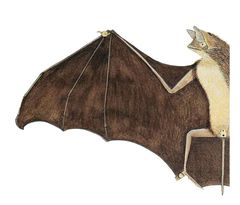
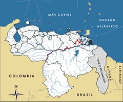

Thyroptera lavali
| Murciélago de ventosas mayor | |
|---|---|
|  | |
| Riesgo de extinción | |
 Vulnerable (UICN) | |
| Clasificación científica | |
| Reino: | Animalia |
| Filo: | Chordata |
| Clase: | Mammalia |
| Orden: | Chiroptera |
| Familia: | Thyropteridae |
| Género: | Thyroptera |
| Especie: | Thyroptera lavali |
| Nombre binomial | |
|
Thyroptera lavali Pine, 1993 | |
| Distribución | |
|
 Mapa de distribución de Thyroptera lavali | |
Contenido
Taxonomía
Nombres comunes
Murciélago de ventosas mayor, Laval's diskwinged bat
Notas taxonómicas
Sinónimos
Descripción
Murciélago insectívoro pequeño que apenas mide 5 cm de longitud de cuerpo. Su coloración dorsal es parda oscura, con los pelos unicolerados. La cabeza es de coloración similar al dorso y el vientre es color pardo oscuro rojizo. El pelaje es corto y basto, y el rostro está cubierto de pelos largos, con el rinario grueso y elevado. Posee una cola larga que llega a medir hasta 3 cm, que se extiende a todo lo largo del uropatagio y la punta sobresale unos 4 a 5 mm del borde libre. El uropatagio es muy amplio y desnudo, con pelitos aislados. Las membranas alares son pardas oscuras, y se unen a la base de la garra del dedo menor de las patas. Los murciélagos de la familia Thyropteridae se caracterizan por tener unas ventosas de forma circular en la base del pulgar y en las plantas de sus patas, las cuales les permiten adherirse a superficies muy lisas, generalmente con la cabeza hacia arriba. De hábitos nocturnos, gregarios e insectívoros, durante el día se refugia en agrupaciones de platanillo (Heliconia spp.) [1].
Distribución
Presente en algunos países de la Amazonía y Orinoquía suramericana, abarcando Colombia, Venezuela, Brasil, Ecuador y Perú. Originalmente la especie fue reportada en Perú, donde hasta hace poco sólo se conocían unos cuatro ejemplares para su Amazonía, capturados en el río Yavarí, a 200 m de altitud, y más recientemente de otra localidad al sureste de ese país. Posteriormente, fue detectada por primera vez para Venezuela y en los últimos años ha sido reportada para una localidad en Colombia y otra en Brasil. En Ecuador sólo se le conoce de una localidad en la Amazonía en el Parque Nacional Yasuní [1,2,3]. En Venezuela se le señala únicamente para los morichales de los llanos orientales, de donde se conocen sólo cinco individuos procedentes de los ríos Morichal Largo, al sur del estado Monagas, y Caris, al sur del estado Anzoátegui, pero se estima que podría ser mayor en el sistema Deltaico, Orinoquía y Amazonía [1,3,4]. Habita en la vegetación rala en zonas bajas y húmedas, con abundancia de palma de moriche (Mauritia flexuosa). No se ha observado en bosques intervenidos [1].
Situación
'Lista Roja Venezuela' Vulnerable B1ab(iii)
'Lista Roja internacional' Datos Insuficientes
Es una especie poco conocida y de distribución enigmática, que sólo se ha reportado para una biorregión de Venezuela. De los otros países de su distribución se cuenta con muy pocos individuos, colectados en unas escasas localidades que no llegan a diez. Sin embargo, aunque no se han realizado estudios poblacionales para estimar la abundancia de la especie, se presume que posee una amplia distribución en la Amazonía y Orinoquía, y que su escasez podría estar asociada a problemas en los muestreos. No obstante, hasta que no se compruebe esta hipótesis, se considera una especie amenazada debido a su distribución restringida y a su localización en una región que acusa una creciente intervención humana [4]. A escala global es considerada Vulnerable por la IUCN [5].
Amenazas
No se tiene información precisa al respecto. Se estima que la principal amenaza que enfrenta la especie estaría relacionada con la destrucción y declinación de los morichales, ecosistema considerado como muy amenazado al norte del Orinoco. El hábitat de la especie se encuentra rodeado de zonas intervenidas, donde los cultivos, ganadería, plantaciones forestales y desarrollos urbanos, se expanden cada vez más. Adicionalmente, aunque la presión actual sobre sus poblaciones fuese moderada, el hecho de poseer una distribución tan restringida la hace susceptible a cualquier alteración futura. La contaminación de los morichales por aguas servidas e industriales, posibles derrames de petróleo en la faja petrolífera del Orinoco y el uso de fertilizantes químicos, podrían afectar a estos frágiles ecosistemas y a la biodiversidad asociada [6].
Conservación
No se ha tomado alguna medida de conservación para proteger a la especie. Dado que los morichales gozan de protección legal mediante el Decreto N° 846 (05/04/90), esta disposición podría estar beneficiando indirectamente a la especie [7]. Es necesario realizar investigaciones y seguimiento de sus poblaciones para precisar su situación actual y profundizar el conocimiento de su biología y ecología. En caso de que los morichales al sur de los estados Anzoátegui y Monagas sean el único lugar donde está presente la especie en Venezuela, se deben tomar medidas legales para proteger su área de distribución [6].
Editores y Colaboradores
Juhani Ojasti, Pablo Lacabana